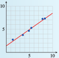
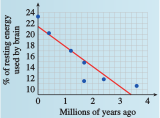
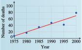

Section 1.6 Linear Regression
¶We have spent most of this chapter analyzing models described by graphs or equations. To create a model, however, we often start with a quantity of data. Choosing an appropriate function for a model is a complicated process. In this section, we consider only linear models and explore methods for fitting a linear function to a collection of data points. First, we fit a line through two data points.
Subsection 1.6.1 Fitting a Line through Two Points
If we already know that two variables are related by a linear function, we can find a formula from just two data points. For example, variables that increase or decrease at a constant rate can be described by linear functions.
Example 1.6.1.
In 1993, Americans drank 188.6 million cases of wine. Wine consumption increased at a constant rate over the next decade, and we drank 258.3 million cases of wine in 2003. (Source: Los Angeles Times, Adams Beverage Group)
- Find a formula for wine consumption, \(W\text{,}\) in millions of cases, as a linear function of time, \(t\text{,}\) in years since 1990.
- State the slope as a rate of change. What does the slope tell us about this problem?
- We have two data points of the form \((t, W)\text{,}\) namely \((3, 188.6)\) and \((13, 258.3)\text{.}\) We use the point-slope formula to fit a line through these two points. First, we compute the slope.\begin{equation*} \frac{\Delta W}{\Delta t}=\frac {258.3 - 188.6}{13 - 3}= 6.97 \end{equation*}Next, we use the slope m = \(6.97\) and either of the two data points in the point-slope formula.\begin{equation*} \begin{aligned}[t] W \amp =W_1 + m(t - t_1) \\ W \amp = 188.6 + 6.97(t - 3) \\ W \amp = 167.69 + 6.97t \end{aligned} \end{equation*}Thus, \(W = f (t) = 167.69 + 6.97t\text{.}\)
-
The slope gives us the rate of change of the function, and the units of the variables can help us interpret the slope in context.
\begin{equation*} \frac{\Delta W}{\Delta t}= \frac{258.3 - 188.6 \text{ millions of cases}}{13 - 3\text{ years}} = 6.97 \text{ millions of cases / year} \end{equation*}Over the 10 years between 1993 and 2003, wine consumption in the United States increased at a rate of 6.97 million cases per year.
To Fit a Line through Two Points:.
Compute the slope between the two points.
-
Substitute the slope and either point into the point-slope formula
\begin{equation*} y = y_1 + m(x - x_1) \end{equation*}
Checkpoint 1.6.2.
In 1991, there were 64.6 burglaries per 1000 households in the United States. The number of burglaries reported annually declined at a roughly constant rate over the next decade, and in 2001 there were 28.7 burglaries per 1000 households. (Source: U.S. Department of Justice)
Find a function for the number of burglaries, \(B\text{,}\) as a function of time, \(t\text{,}\) in years, since 1990.
State the slope as a rate of change. What does the slope tell us about this problem?
\(y = 68.19 - 3.59x\)
\(-3.59\) burglaries per \(1000\) households per year. From 1991 to 2001, the burglary rate declined by \(3.59\) burglaries per 1000 households every year.
Subsection 1.6.2 Scatterplots
Empirical data points in a linear relation may not lie exactly on a line. There are many factors that can affect experimental data, including measurement error, the influence of environmental conditions, and the presence of related variable quantities.
Example 1.6.3.
A consumer group wants to test the gas mileage of a new model SUV. They test-drive six vehicles under similar conditions and record the distance each drove on various amounts of gasoline.
| Gasoline used (gal) | \(9.6\) | \(11.3\) | \(8.8\) | \(5.2\) | \(10.3\) | \(6.7\) |
| Miles driven | \(155.8\) | \(183.6\) | \(139.6\) | \(80.4\) | \(167.1\) | \(99.7\) |
Are the data linear?
Draw a line that fits the data.
What does the slope of the line tell us about the data?
-
No, the data are not strictly linear. If we compute the slopes between successive data points, the values are not constant. We can see from an accurate plot of the data, shown below, that the points lie close to, but not precisely on, a straight line.


- We would like to draw a line that comes as close as possible to all the data points, even though it may not pass precisely through any of them. In particular, we try to adjust the line so that we have the same number of data points above the line and below the line. One possible solution is shown above.
- To compute the slope of the our estimated line, we first choose two points on the line. Our line appears to pass through one of the data points,\((8.8, 139.6)\text{.}\) We look for a second point on the line whose coordinates are easy to read, perhaps \((6.5,100)\text{.}\) The slope is\begin{equation*} m = \frac{139.6 - 100}{8.8 - 6.5}= 17.2\text{ miles per gallon} \end{equation*}According to our data, the SUV gets about 17.2 miles to the gallon.
Caution 1.6.4.
To find the slope of your estimated line, be sure to choose points on the line; do not choose any of the data points (unless they happen to lie on your line).
Checkpoint 1.6.5.
Plot the data points. Do the points lie on a line?
Draw a line that fits the data.
| \(x\) | \(1.49\) | \(3.68\) | \(4.95\) | \(5.49\) | \(7.88\) | \(8.41\) |
| \(y\) | \(2.69\) | \(3.7\) | \(4.6\) | \(5.2\) | \(7.2\) | \(7.3\) |

- 
The graph in Example 1.6.3 is called a scatterplot. The points on a scatterplot may or may not show some sort of pattern. Consider the three plots shown below.
- In figure (a), the data points resemble a cloud of gnats; there is no apparent pattern to their locations.
- In figure (b), the data follow a generally decreasing trend, but certainly do not all lie on the same line.
- The points in figure (c) are even more organized; they seem to lie very close to an imaginary line.

If the data in a scatterplot are roughly linear, we can estimate the location of an imaginary line of best fit that passes as close as possible to the data points. We can then use this line to make predictions about the data.
Subsection 1.6.3 Linear Regression
One measure of a person's physical fitness is the body mass index, or BMI. Your BMI is the ratio of your weight in kilograms to the square of your height in centimeters. Thus, thinner people have lower BMI scores, and fatter people have higher scores. The Centers for Disease Control considers a BMI between 18.5 and 24.9 to be healthy.
The points on the scatterplot below show the BMI of Miss America from 1921 to 1991. From the data in the scatterplot, can we see a trend in Americans’ ideal of female beauty?

Example 1.6.6.
- Estimate a line of best fit for the scatterplot above. (Source: http://www.pbs.org)
- Use your line to estimate the BMI of Miss America 1980.
-
We draw a line that fits the data points as best we can, as shown below. (Note that we have set \(t = 0\) in 1920 on this graph.) We try to end up with roughly equal numbers of data points above and below our line.

- We see that when \(t = 60\) on this line, the \(y\)-value is approximately 18.3. We therefore estimate that Miss America 1980 had a BMI of 18.3. (Her actual BMI was 17.85.)
Checkpoint 1.6.7.
Human brains consume a large amount of energy, about 16 times as much as muscle tissue per unit weight. In fact, brain metabolism accounts for about 25% of an adult human’s energy needs, as compared to about 5% for other mammals.
As hominid species evolved, their brains required larger and larger amounts of energy, as shown below. (Source: Scientific American, December 2002)
- Draw a line of best fit through the data points.
- Estimate the amount of energy used by the brain of a hominid species that lived three million years ago.
- 
About \(10.5\%\)
The process of predicting an output value based on a straight line that fits the data is called linear regression, and the line itself is called the regression line. The equation of the regression line is usually used (instead of a graph) to predict values.
Example 1.6.8.
- Find the equation of the regression line in Example 1.6.6.
- Use the regression equation to predict the BMI of Miss America 1980.
- We first calculate the slope by choosing two points on the regression line. The points we choose are not necessarily any of the original data points; instead they should be points on the regression line itself. The line appears to pass through the points \((17, 20)\) and \((67, 18)\text{.}\) The slope of the line is then\begin{equation*} m = \frac{18 - 20}{67 - 17}\approx -0.04 \end{equation*}Now we use the point-slope formula to find the equation of the line. (If you need to review the point-slope formula, see Section 1.5.) We substitute \(m = -0.04\) and use either of the two points for \((x_1, y_1)\text{;}\) we will choose \((17, 20)\text{.}\) The equation of the regression line is\begin{equation*} \begin{aligned}[t] y \amp = y_1 + m(x - x_1)\\ y \amp = 20-0.04(x-17) \amp \amp \blert{\text{Simplify.}}\\ y \amp = 20.68 - 0.04t\\ \end{aligned} \end{equation*}
- We will use the regression equation to make our prediction. For Miss America 1980, \(t = 60\) and\begin{equation*} y = 20.68 - 0.04(60) = 18.28 \end{equation*}This value agrees well with the estimate we made in Example 1.6.6.
Checkpoint 1.6.9.
The number of manatees killed by watercraft in Florida waters has been increasing since 1975. Data are given at 5-year intervals in the table. (Source: Florida Fish and Wildlife Conservation Commission)
| Year | Manatee deaths |
| \(1975\) | \(6\) |
| \(1980\) | \(16\) |
| \(1985\) | \(33\) |
| \(1990\) | \(47\) |
| \(1995\) | \(42\) |
| \(2000\) | \(78\) |
- Draw a regression line through the data points shown in the figure.
- Use the regression equation to estimate the number of manatees killed by watercraft in 1998.
- 
\(y = 4.7 + 2.6t\)
\(65\)
Subsection 1.6.4 Linear Interpolation and Extrapolation
Using a regression line to estimate values between known data points is called interpolation. Making predictions beyond the range of known data is called extrapolation.
Example 1.6.10.
- Use linear interpolation to estimate the BMI of Miss America 1960.
- Use linear extrapolation to predict the BMI of Miss America 2001.
- For 1960, we substitute \(t = 40\) into the regression equation we found in Example 1.6.8.\begin{equation*} y = 20.68 - 0.04(40) = 19.08 \end{equation*}We estimate that Miss America 1960 had a BMI of 19.08. (Her BMI was actually 18.79.)
- For 2001, we substitute \(t = 81\) into the regression equation.\begin{equation*} y = 20.68 - 0.04(81) = 17.44 \end{equation*}
Our model predicts that Miss America 2001 had a BMI of 17.44. In fact, her BMI was 20.25. By the late 1990s, public concern over the self-image of young women had led to a reversal of the trend toward ever-thinner role models.
Example 1.6.10b illustrates an important fact about extrapolation: If we try to extrapolate too far, we may get unreasonable results. For example, if we use our model to predict the BMI of Miss America 2520 (when \(t = 600\)), we get
Even if the Miss America pageant is still operating in 600 years, the winner cannot have a negative BMI. Our linear model provides a fair approximation for 1920–1990, but if we try to extrapolate too far beyond the known data, the model may no longer apply.
We can also use interpolation and extrapolation to make estimates for nonlinear functions. Sometimes a variable relationship is not linear, but a portion of its graph can be approximated by a line.

The graph at right shows a child’s height each month. The graph is not linear because her rate of growth is not constant; her growth slows down as she approaches her adult height. However, over a short time interval the graph is close to a line, and that line can be used to approximate the coordinates of points on the curve.
Checkpoint 1.6.11.
Emily was 82 centimeters tall at age 36 months and 88 centimeters tall at age 48 months.
Find a linear equation that approximates Emily's height in terms of her age over the given time interval.
Use linear interpolation to estimate Emily’s height when she was 38 months old, and extrapolate to predict her height at age 50 months.
Predict Emily's height at age 25 (300 months). Is your answer reasonable?
\(y = 64 + 0.5x\)
\(83\) cm, \(89\) cm
\(214\) cm; No
Estimating a line of best fit is a subjective process. Rather than base their estimates on such a line, statisticians often use the least squares regression line.

This regression line minimizes the sum of the squares of all the vertical distances between the data points and the corresponding points on the line, as shown at left. Many calculators are programmed to find the least squares regression line, using an algorithm that depends only on the data, not on the appearance of the graph.
Technology 1.6.12. Using a Calculator for Linear Regression.
You can use a graphing calculator to make a scatterplot, find a regression line, and graph the regression line with the data points. On the TI-83 calculator, we use the statistics mode, which you can access by pressing STAT. You will see a display that looks like figure (a) below. Choose \(1\) to \(Edit\) (enter or alter) data.

Now follow the instructions in Example 1.6.13 for using your calculator’s statistics features.
Example 1.6.13.
- Find the equation of the least squares regression line for the following data:\begin{equation*} (10, 12), (11, 14), (12, 14), (12, 16), (14, 20) \end{equation*}
- Plot the data points and the least squares regression line on the same axes.
-
We must first enter the data.
- Press
STATENTERto select \(Edit\text{.}\) - If there are data in column \(L_1\) or \(L_2\text{,}\) clear them out: Use the \(\boxed{\uparrow}\) key to select \(L_1\text{,}\) press
CLEAR, then do the same for \(L_2\text{.}\) -
Enter the \(x\)-coordinates of the data points in the \(L_1\) column and enter the \(y\)-coordinates in the \(L_2\) column, as shown in figure (a) below.

Now we are ready to find the regression equation for our data.
- Press
STAT\(\boxed{\rightarrow}\) 4 to select linear regression, or LinReg (ax + b), then pressENTER. The calculator will display the equation \(y = ax + b\) and the values for \(a\) and \(b\text{,}\) as shown in figure (b).
You should find that your regression line is approximately \(y = 1.95x - 7.86\text{.}\)
- Press
-
First, we first clear out any old definitions in the list.
- Position the cursor after \(Y_1 =\) and copy in the regression equation as follows:
- Press
VARS\(5\) \(\boxed{\rightarrow}\) \(\boxed{\rightarrow}\)ENTER. - To draw a scatterplot, press
2ndY=\(1\) and set the Plot1 menu as shown in figure (a) below. - Finally, press
ZOOM\(9\) to see the scatterplot of the data and the regression line. The graph is shown in figure (b).

Caution 1.6.14.
When you are through with the scatterplot, press Y= \(\boxed{\uparrow}\) ENTER to turn off the \(Stat Plot\text{.}\) If you neglect to do this, the calculator will continue to show the scatterplot even after you ask it to plot a new equation.
Checkpoint 1.6.15.
Use your calculator’s statistics features to find the least squares regression equation for the data in Checkpoint 1.6.5.
Plot the data and the graph of the regression equation.
\(y = 1.34 + 0.71x\)

Subsection 1.6.5 Section Summary
¶Subsubsection 1.6.5.1 Vocabulary
Look up the definitions of new terms in the Glossary.
Scatterplot
Least squares regression line
Extrapolate
Regression line
Interpolate
Linear regression
Subsubsection 1.6.5.2 CONCEPTS
Data points may not lie exactly on the graph of an equation.
Points in a scatterplot may or may not exhibit a pattern.
We can approximate a linear pattern by a regression line.
We can use interpolation or extrapolation to make estimates and predictions.
If we extrapolate too far beyond the known data, we may get unreasonable results.
Subsubsection 1.6.5.3 STUDY QUESTIONS
What is a regression line?
State two formulas you will need to calculate the equation of a line through two points.
Explain the difference between interpolation and extrapolation.
In general, should you have more confidence in figures obtained by interpolation or by extrapolation? Why?
Subsubsection 1.6.5.4 SKILLS
Practice each skill in the Homework 1.13 problems listed.
Find the equation of a line through two points: #1–6, 29–36
Draw a line of best fit: #7–18
Find the equation of a regression line: #11–28, 37–40
Use interpolation and extrapolation to make predictions: #11–40